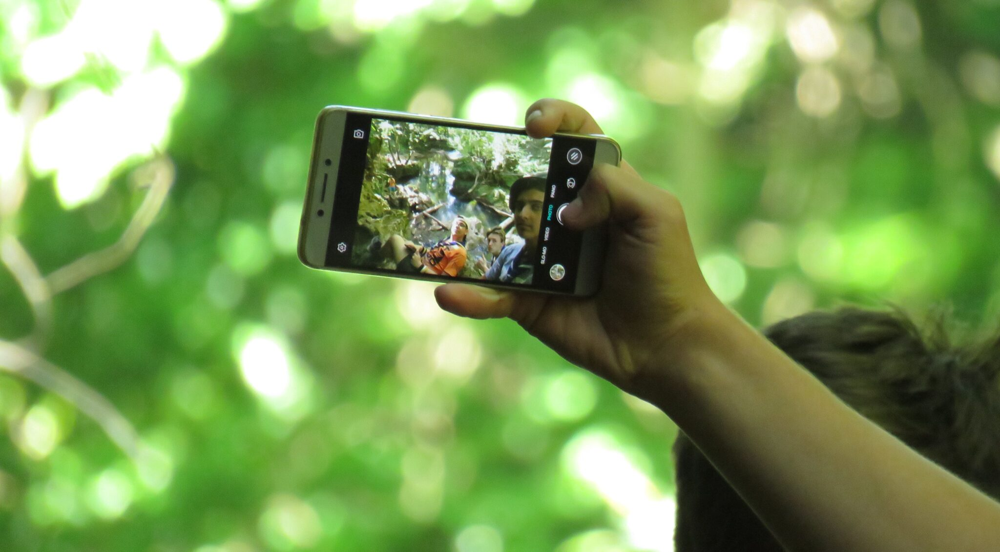

Campul de vară 2k17

Mulți dintre exploratorii care au participat în campul de anul acesta au fost la prima experiență de acest gen. Cât de marcantă, memorabilă și utilă a fost aventura în Mesopotamia aflăm de la Zaha, care a binevoit să ne împărtășească din cele trăite de el în camp.
Zaha, cercetaş explorator al centrului local Cabana Scout, gata să vă povestesc despre primul meu camp, în care am avut ocazia de a călătorii înapoi în timp, mai exact în Mesopotamia, timp de 10 zile, alături de un grup vesel şi plin de surprize (majoritatea plăcute).
Aventura noastră începe ca orice altă aventură a cercetaşilor… adică la 5 dimineaţa în gară, însă asta nu ne-a oprit să fim vioi şi entuziasmați gândindu-ne la zilele pe care urma să le petrecem împreună.
După o călătorie de 8 ore cu trenul, în care am râs şi ne-am distrat (sau am dormit) şi un drum de o oră cu maşină, am ajuns în cele din urmă în zona de camp, situat în Valea Beiului, unde au urmat 2 zile în care ne-am ocupat de infrastructura campului: montarea corturilor şi a hamacelor, construirea unei vetre, un coş de gunoi şi un uscător, dar şi ridicarea unui catarg de care am agățat Tricolorul, fiind martori la un moment patriotic în fiecare dimineaţă (by Ovidiu). De asemenea, au fost formate 3 patrule (Patrula Lama, Patrula Army şi desigur Minunata Patrulă ANAFU), fiecare venind la pachet cu un strigăt şi un steag (şi bineînţeles 3-4 cercetaşi gata oricând). Organizarea responsabilităţilor a fost una foarte bună şi eficientă, fiecare patrulă având câte o sarcină în fiecare zi; adus apă, tăiat lemne şi… curățenie, dar şi prepararea unei mese pe zi (bună, Ovidiu!). O noutate pentru acest camp a constituit-o programul pentru plantoane. În fiecare seară doi cercetaşi stând de pază câte 2 ore la foc. Acesta a fost un prilej de a ne cunoaşte mai bine cu partenerul de planton şi de a crea conexiuni noi (sau de a nu dormi 3 nopți la rând, urmând ca în a 4-a să fii trimis la culcare – bună, Ana!).
În zilele 3 şi 4, am avut ocazia să vizităm Cascada Șușara, un loc liniștit şi frumos la care am fi ajuns mai repede daca nu am fi făcut „un mic ocol” (bună, Ovidiu!). Bătaia cu apă a fost una relativ uscată, până la finalul ei exploziv.
În următoarele două zile am desfăşurat o activitate nouă, respectiv un hike de două zile… spre Lacul Dracului. Drumul a fost unul lung şi obositor, însă peisajul spectaculos şi opririle la izvoare au făcut să merite tot efortul. Odată ajunși la lac, ne-am răcorit cu o baie “scurtă”, iar apoi ne-am pus pe treabă pentru a monta campul provizoriu.
Seara, cum este şi normal după o expediţie lungă, ne-am înfruptat cu bezele prăjite în foc, apoi am dormit în hamace sub cerul liber! La micul dejun, am mâncat pita făcută de Ana. 🙂 A doua zi am pornit înapoi spre bază, pe drumul pe care am venit, fiind întâmpinați de către Poliţia Română (prietenii ştiu de ce…).
Zilele 7 şi 8 au fost zile de odihnă. După ce cu ajutorul Ted Ex-ului am aflat câte ceva despre pasiunea lui Ovi pentru tehnologie, efectul Butterfly, o mică piesă de teatru şi depănatul câtorva amintiri din campul trecut (by Teo) am avut experienţa culinară a vieţii mele, bucurându-mă de un pilaf făcut în parteneriat cu oamenii legii.
Cea de-a doua activitate interesantă, care s-a desfăşurat în zilele de odihnă, este seara Balului Mascat cu specific Mesopotamian în care ne-am etalat ținutele originale, dar şi “talentele ascunse”. După multe reprezentații chinuitoare, au fost încoronați regele şi regina balului: Ovi şi Ana (cei doi încă se ceartă pe postul de regină). În aceeaşi seară s-a vrut să facem şi o noapte albă, însă, mulțumită sistemului de vot super eficient al lui Adi (salut, Șefu’!), cam toţi adormiserăm pe la jumătatea nopţii.
Ultimele două zile nu au fost lipsite de activităţi. Am fost în hike spre Ochiul Beiului, Cascada Beușnița şi Cascada Văioaga, unde, după o rundă scurtă de bălăceală (cei trei crai) şi o şedinţă foto super-profi, am plecat înapoi spre camp unde am început, uşor, uşor, să ne strângem lucrurile, demontând toată infrastructura, punând în bagaje multe SUPER amintiri şi bucurându-ne de ultimele clipe rămase de petrecut în camp.
Plecarea… memorabilă, din multe puncte de vedere. M-a marcat prin mini UNTOLD-ul de la Adi din maşină (mă rog, cât mai țin minte din el înainte de a-mi cădea capul pe rucsac şi de a pierde orice control asupra picioarelor) şi o despărțire dramatică, ca în filme, făcându-le cu mâna de la geamul trenului norocoaselor care au mers cu mașina până la Bucureşti.
În concluzie aş putea spune că primul meu camp a fost unul memorabil, alături de un grup care, de fiecare dată când avea ocazia, îşi amintea cu drag numele meu… ZAHAAAAAAAAAAA!!!
P.S. Am mai fost eu în tabere când eram mic, dar campul ăsta a fost SUPER SUPER, WOW SUUUUUUUPER :3!
Alexandru (Zaharescu)